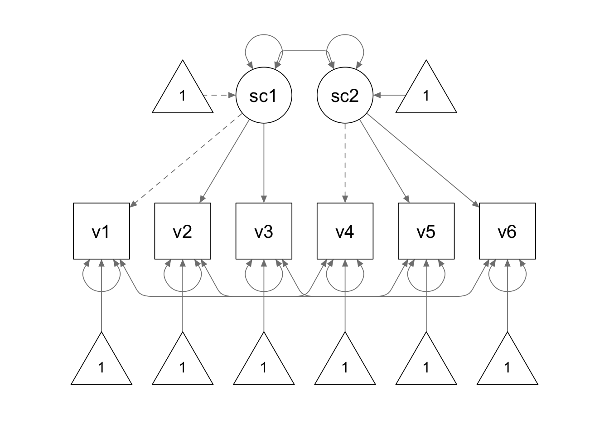
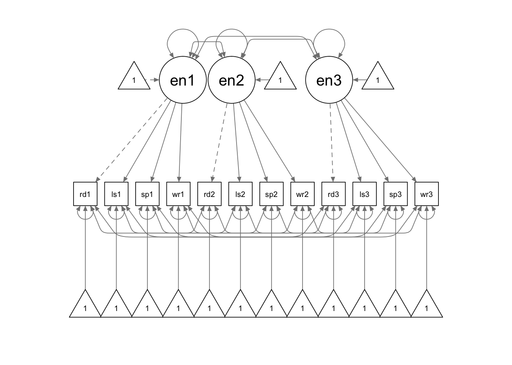

In this tutorial, we are going to use lavaan for repeated measure means models.
library(lavaan)
library(semPlot)This example corresponds to the Duncan & Stoolmiller (1993) example in your course slides. We have the sample means, standard deviations, and correlation matrix of the data. We first convert the correlation matrix to variance-covariance matrix.
cormat <- "
1.000
.812 1.000
.819 .752 1.000
.672 .616 .621 1.000
.464 .620 .514 .680 1.000
.612 .640 .719 .819 .676 1.000
"
sdev <- c(2.46, 1.76, 2.74, 2.63, 1.89, 2.84)
smean <- c(10.96, 11.83, 9.90, 11.03, 12.14, 10.12)
Cmat <- getCov(cormat)
Dmat <- diag(sdev)
covmat <- Dmat %*% Cmat %*% Dmat
colnames(covmat) <- paste0("v", 1:6)Next, we fit a multi-group CFA model to the data.

We use the following model syntax to specify our model. We use the same parameter labels to contrain the corresponding factor loadings and intercepts to be equal across time points.
Because we are using the variance-covariance matrix as the input data, we need to add the sample.mean = argument to supply the sample means.
repeat.model <- '
# measurement model
socsupp1 =~ 1*v1 + a*v2 + b*v3
socsupp2 =~ 1*v4 + a*v5 + b*v6
# residual covariances
v1 ~~ v4
v2 ~~ v5
v3 ~~ v6
# intercepts
v1 ~ c*1
v2 ~ d*1
v3 ~ e*1
v4 ~ c*1
v5 ~ d*1
v6 ~ e*1
# means of latent factors
socsupp1 ~ 0*1
socsupp2 ~ NA*1
'
repeat.fit <- sem(repeat.model, sample.cov = covmat, sample.nobs = 84, sample.mean = smean)
summary(repeat.fit, fit.measures=T)## lavaan 0.6-9 ended normally after 63 iterations
##
## Estimator ML
## Optimization method NLMINB
## Number of model parameters 23
## Number of equality constraints 5
##
## Number of observations 84
##
## Model Test User Model:
##
## Test statistic 11.967
## Degrees of freedom 9
## P-value (Chi-square) 0.215
##
## Model Test Baseline Model:
##
## Test statistic 443.134
## Degrees of freedom 15
## P-value 0.000
##
## User Model versus Baseline Model:
##
## Comparative Fit Index (CFI) 0.993
## Tucker-Lewis Index (TLI) 0.988
##
## Loglikelihood and Information Criteria:
##
## Loglikelihood user model (H0) -926.691
## Loglikelihood unrestricted model (H1) -920.707
##
## Akaike (AIC) 1889.382
## Bayesian (BIC) 1933.136
## Sample-size adjusted Bayesian (BIC) 1876.355
##
## Root Mean Square Error of Approximation:
##
## RMSEA 0.063
## 90 Percent confidence interval - lower 0.000
## 90 Percent confidence interval - upper 0.146
## P-value RMSEA <= 0.05 0.360
##
## Standardized Root Mean Square Residual:
##
## SRMR 0.044
##
## Parameter Estimates:
##
## Standard errors Standard
## Information Expected
## Information saturated (h1) model Structured
##
## Latent Variables:
## Estimate Std.Err z-value P(>|z|)
## socsupp1 =~
## v1 1.000
## v2 (a) 0.638 0.049 13.117 0.000
## v3 (b) 1.039 0.073 14.235 0.000
## socsupp2 =~
## v4 1.000
## v5 (a) 0.638 0.049 13.117 0.000
## v6 (b) 1.039 0.073 14.235 0.000
##
## Covariances:
## Estimate Std.Err z-value P(>|z|)
## .v1 ~~
## .v4 0.390 0.236 1.653 0.098
## .v2 ~~
## .v5 0.393 0.157 2.506 0.012
## .v3 ~~
## .v6 0.740 0.301 2.461 0.014
## socsupp1 ~~
## socsupp2 4.136 0.849 4.874 0.000
##
## Intercepts:
## Estimate Std.Err z-value P(>|z|)
## .v1 (c) 10.925 0.268 40.766 0.000
## .v2 (d) 11.877 0.185 64.299 0.000
## .v3 (e) 9.916 0.291 34.037 0.000
## .v4 (c) 10.925 0.268 40.766 0.000
## .v5 (d) 11.877 0.185 64.299 0.000
## .v6 (e) 9.916 0.291 34.037 0.000
## socsupp1 0.000
## socsupp2 0.184 0.199 0.925 0.355
##
## Variances:
## Estimate Std.Err z-value P(>|z|)
## .v1 0.759 0.271 2.801 0.005
## .v2 0.771 0.157 4.923 0.000
## .v3 1.725 0.378 4.562 0.000
## .v4 1.204 0.370 3.253 0.001
## .v5 1.574 0.283 5.571 0.000
## .v6 1.527 0.419 3.646 0.000
## socsupp1 5.331 0.947 5.631 0.000
## socsupp2 5.667 1.036 5.469 0.000The data for this example is saved in a txt file named “latent_means2_data.txt”.
setwd(mypath) # change it to the path of your own data folder
data2 <- read.delim("latent_means2_data.txt", sep = "\t", header = F)
colnames(data2) <- c('read1', 'read2', 'read3', 'list1', 'list2', 'list3',
'speak1', 'speak2','speak3', 'write1', 'write2', 'write3')
# check the data
str(data2)## 'data.frame': 170 obs. of 12 variables:
## $ read1 : int 22 19 24 21 24 17 14 30 19 11 ...
## $ read2 : int 24 19 26 24 26 21 19 29 23 6 ...
## $ read3 : int 23 17 30 27 28 20 20 29 23 13 ...
## $ list1 : int 28 18 27 18 29 18 14 27 13 15 ...
## $ list2 : int 30 16 30 20 28 16 7 18 10 8 ...
## $ list3 : int 29 17 27 18 26 17 10 24 17 19 ...
## $ speak1: int 23 19 24 22 17 14 14 23 17 23 ...
## $ speak2: int 23 18 24 17 18 17 10 22 17 22 ...
## $ speak3: int 23 18 29 17 19 15 10 23 18 24 ...
## $ write1: int 25 17 21 18 20 21 14 22 17 17 ...
## $ write2: int 22 20 24 21 20 17 18 25 20 18 ...
## $ write3: int 21 25 27 22 22 21 18 22 17 18 ...summary(data2)## read1 read2 read3 list1
## Min. : 0.00 Min. : 3.00 Min. : 4.00 Min. : 1.00
## 1st Qu.:13.00 1st Qu.:14.00 1st Qu.:16.00 1st Qu.:13.00
## Median :17.00 Median :19.00 Median :20.00 Median :17.00
## Mean :17.38 Mean :18.55 Mean :19.55 Mean :16.56
## 3rd Qu.:22.00 3rd Qu.:23.00 3rd Qu.:23.00 3rd Qu.:21.00
## Max. :30.00 Max. :30.00 Max. :30.00 Max. :30.00
## list2 list3 speak1 speak2
## Min. : 1.00 Min. : 1.00 Min. : 0.00 Min. : 5.00
## 1st Qu.:14.00 1st Qu.:15.00 1st Qu.:15.00 1st Qu.:17.00
## Median :18.00 Median :19.00 Median :18.00 Median :18.00
## Mean :17.63 Mean :18.58 Mean :17.96 Mean :18.73
## 3rd Qu.:21.75 3rd Qu.:23.00 3rd Qu.:20.00 3rd Qu.:22.00
## Max. :30.00 Max. :30.00 Max. :28.00 Max. :27.00
## speak3 write1 write2 write3
## Min. :10.00 Min. : 7.00 Min. : 8.00 Min. : 7.00
## 1st Qu.:17.00 1st Qu.:15.00 1st Qu.:17.00 1st Qu.:18.00
## Median :19.00 Median :20.00 Median :20.00 Median :20.50
## Mean :19.24 Mean :18.59 Mean :19.58 Mean :20.11
## 3rd Qu.:22.00 3rd Qu.:21.00 3rd Qu.:22.00 3rd Qu.:22.00
## Max. :29.00 Max. :30.00 Max. :28.00 Max. :29.00
We use the following model syntax to specify the model. As in the previous example, we specify the parameter labels to impose the equality constraints. Additionally, when we write the means formulas for the latent factors, we used a vector such as c(NA,h) as the multiplier, instead of a single character string. It is used because we want to give the parameter a label while allowing it to be freely estimated. Later, we used the parameter labels to create a new parameter that reflects the difference between the latent factor mean at time 2 vs. the latent factor mean at time 3 diff:=h-j.
model2 <- '
# measurement model
english1 =~ 1*read1 + a*list1 + b*speak1 + c*write1
english2 =~ 1*read2 + a*list2 + b*speak2 + c*write2
english3 =~ 1*read3 + a*list3 + b*speak3 + c*write3
# covariances
read1 ~~ read2 + read3
read2 ~~ read3
list1 ~~ list2 + list3
list2 ~~ list3
speak1 ~~ speak2 + speak3
speak2 ~~ speak3
write1 ~~ write2 + write3
write2 ~~ write3
# intercepts
read1 ~ d*1
read2 ~ d*1
read3 ~ d*1
list1 ~ e*1
list2 ~ e*1
list3 ~ e*1
speak1 ~ f*1
speak2 ~ f*1
speak3 ~ f*1
write1 ~ g*1
write2 ~ g*1
write3 ~ g*1
# means
english1 ~ 0*1
english2 ~ c(NA,h)*1
english3 ~ c(NA,j)*1
# difference between means
diff := h - j
'
fit2 <- sem(model2, data2)
summary(fit2, fit.measures = T, standardized = T)## lavaan 0.6-9 ended normally after 168 iterations
##
## Estimator ML
## Optimization method NLMINB
## Number of model parameters 53
## Number of equality constraints 14
##
## Number of observations 170
##
## Model Test User Model:
##
## Test statistic 108.271
## Degrees of freedom 51
## P-value (Chi-square) 0.000
##
## Model Test Baseline Model:
##
## Test statistic 1711.627
## Degrees of freedom 66
## P-value 0.000
##
## User Model versus Baseline Model:
##
## Comparative Fit Index (CFI) 0.965
## Tucker-Lewis Index (TLI) 0.955
##
## Loglikelihood and Information Criteria:
##
## Loglikelihood user model (H0) -5352.428
## Loglikelihood unrestricted model (H1) -5298.293
##
## Akaike (AIC) 10782.856
## Bayesian (BIC) 10905.152
## Sample-size adjusted Bayesian (BIC) 10781.665
##
## Root Mean Square Error of Approximation:
##
## RMSEA 0.081
## 90 Percent confidence interval - lower 0.060
## 90 Percent confidence interval - upper 0.103
## P-value RMSEA <= 0.05 0.010
##
## Standardized Root Mean Square Residual:
##
## SRMR 0.066
##
## Parameter Estimates:
##
## Standard errors Standard
## Information Expected
## Information saturated (h1) model Structured
##
## Latent Variables:
## Estimate Std.Err z-value P(>|z|) Std.lv Std.all
## english1 =~
## read1 1.000 4.364 0.665
## list1 (a) 1.127 0.095 11.818 0.000 4.921 0.795
## speak1 (b) 0.659 0.062 10.699 0.000 2.875 0.708
## write1 (c) 0.837 0.068 12.252 0.000 3.651 0.841
## english2 =~
## read2 1.000 4.022 0.672
## list2 (a) 1.127 0.095 11.818 0.000 4.535 0.708
## speak2 (b) 0.659 0.062 10.699 0.000 2.649 0.700
## write2 (c) 0.837 0.068 12.252 0.000 3.365 0.800
## english3 =~
## read3 1.000 3.995 0.702
## list3 (a) 1.127 0.095 11.818 0.000 4.505 0.783
## speak3 (b) 0.659 0.062 10.699 0.000 2.632 0.705
## write3 (c) 0.837 0.068 12.252 0.000 3.343 0.818
##
## Covariances:
## Estimate Std.Err z-value P(>|z|) Std.lv Std.all
## .read1 ~~
## .read2 12.016 2.151 5.585 0.000 12.016 0.554
## .read3 11.181 1.989 5.620 0.000 11.181 0.563
## .read2 ~~
## .read3 10.090 1.831 5.509 0.000 10.090 0.561
## .list1 ~~
## .list2 5.658 1.786 3.168 0.002 5.658 0.333
## .list3 3.794 1.470 2.582 0.010 3.794 0.282
## .list2 ~~
## .list3 5.713 1.705 3.350 0.001 5.713 0.353
## .speak1 ~~
## .speak2 4.519 0.800 5.648 0.000 4.519 0.583
## .speak3 4.327 0.778 5.563 0.000 4.327 0.569
## .speak2 ~~
## .speak3 4.612 0.762 6.050 0.000 4.612 0.645
## .write1 ~~
## .write2 1.551 0.740 2.096 0.036 1.551 0.261
## .write3 1.684 0.701 2.402 0.016 1.684 0.305
## .write2 ~~
## .write3 2.364 0.744 3.178 0.001 2.364 0.399
## english1 ~~
## english2 16.781 3.020 5.557 0.000 0.956 0.956
## english3 15.992 2.900 5.515 0.000 0.917 0.917
## english2 ~~
## english3 15.821 2.801 5.648 0.000 0.985 0.985
##
## Intercepts:
## Estimate Std.Err z-value P(>|z|) Std.lv Std.all
## .read1 (d) 17.530 0.458 38.240 0.000 17.530 2.673
## .read2 (d) 17.530 0.458 38.240 0.000 17.530 2.929
## .read3 (d) 17.530 0.458 38.240 0.000 17.530 3.079
## .list1 (e) 16.473 0.449 36.688 0.000 16.473 2.660
## .list2 (e) 16.473 0.449 36.688 0.000 16.473 2.572
## .list3 (e) 16.473 0.449 36.688 0.000 16.473 2.862
## .speak1 (f) 17.980 0.294 61.189 0.000 17.980 4.426
## .speak2 (f) 17.980 0.294 61.189 0.000 17.980 4.754
## .speak3 (f) 17.980 0.294 61.189 0.000 17.980 4.815
## .write1 (g) 18.580 0.320 58.076 0.000 18.580 4.280
## .write2 (g) 18.580 0.320 58.076 0.000 18.580 4.417
## .write3 (g) 18.580 0.320 58.076 0.000 18.580 4.549
## english1 0.000 0.000 0.000
## english2 (h) 1.122 0.193 5.801 0.000 0.279 0.279
## english3 (j) 1.906 0.228 8.377 0.000 0.477 0.477
##
## Variances:
## Estimate Std.Err z-value P(>|z|) Std.lv Std.all
## .read1 23.964 2.915 8.222 0.000 23.964 0.557
## .list1 14.130 2.060 6.860 0.000 14.130 0.369
## .speak1 8.235 1.037 7.944 0.000 8.235 0.499
## .write1 5.519 0.943 5.852 0.000 5.519 0.293
## .read2 19.648 2.385 8.238 0.000 19.648 0.548
## .list2 20.460 2.607 7.847 0.000 20.460 0.499
## .speak2 7.284 0.903 8.067 0.000 7.284 0.509
## .write2 6.377 0.957 6.661 0.000 6.377 0.360
## .read3 16.445 2.060 7.983 0.000 16.445 0.507
## .list3 12.833 1.821 7.046 0.000 12.833 0.387
## .speak3 7.017 0.880 7.969 0.000 7.017 0.503
## .write3 5.506 0.870 6.332 0.000 5.506 0.330
## english1 19.046 3.457 5.510 0.000 1.000 1.000
## english2 16.174 2.940 5.501 0.000 1.000 1.000
## english3 15.964 2.850 5.601 0.000 1.000 1.000
##
## Defined Parameters:
## Estimate Std.Err z-value P(>|z|) Std.lv Std.all
## diff -0.784 0.156 -5.019 0.000 -0.198 -0.198